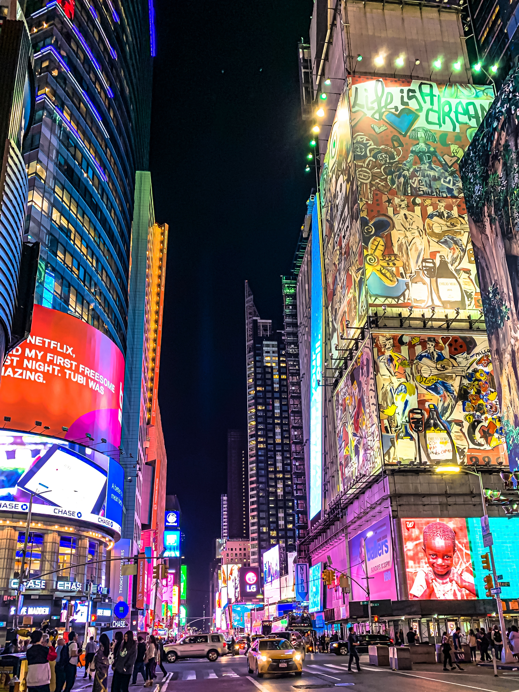
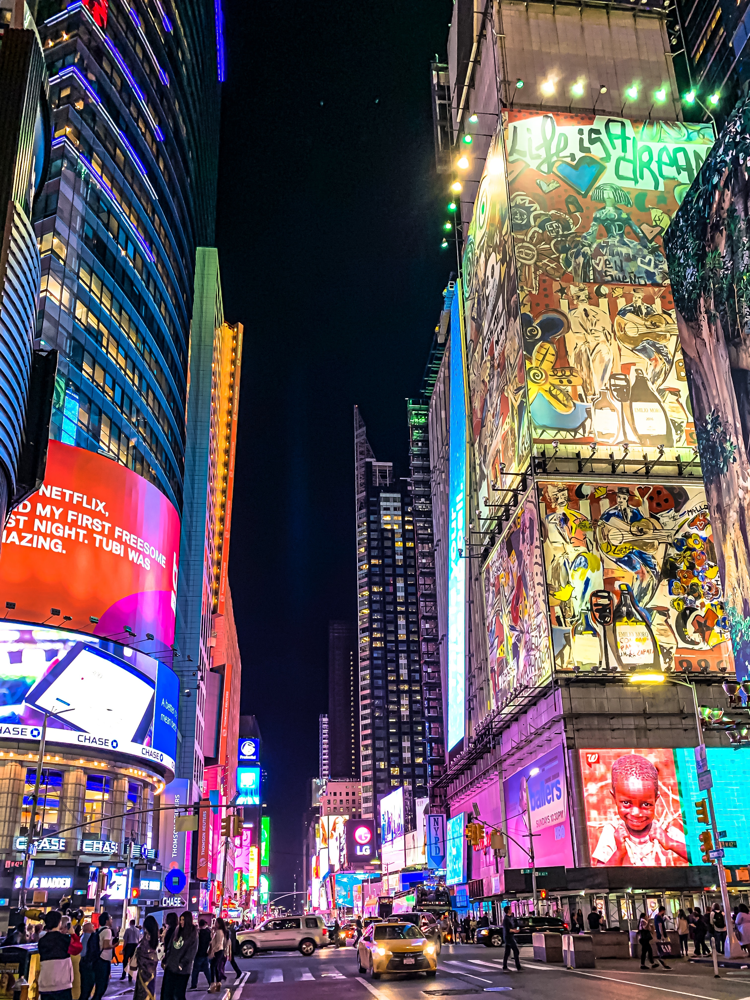
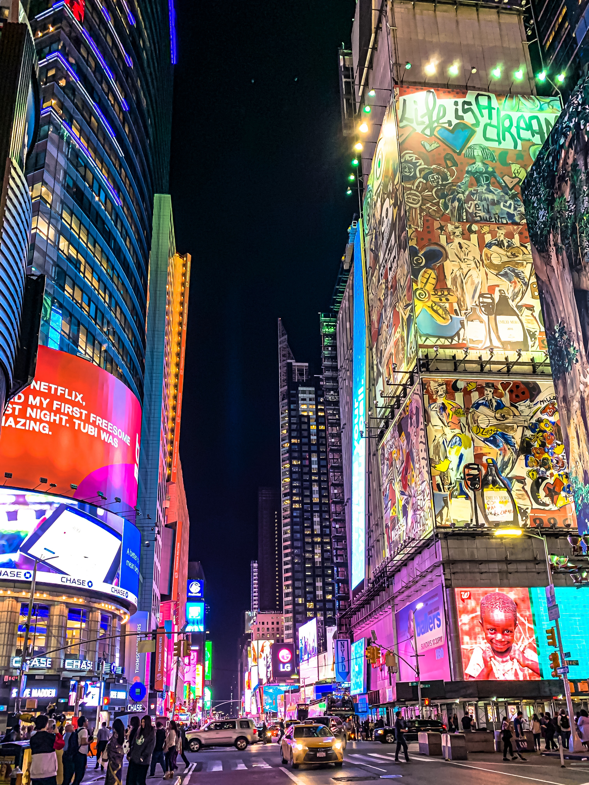
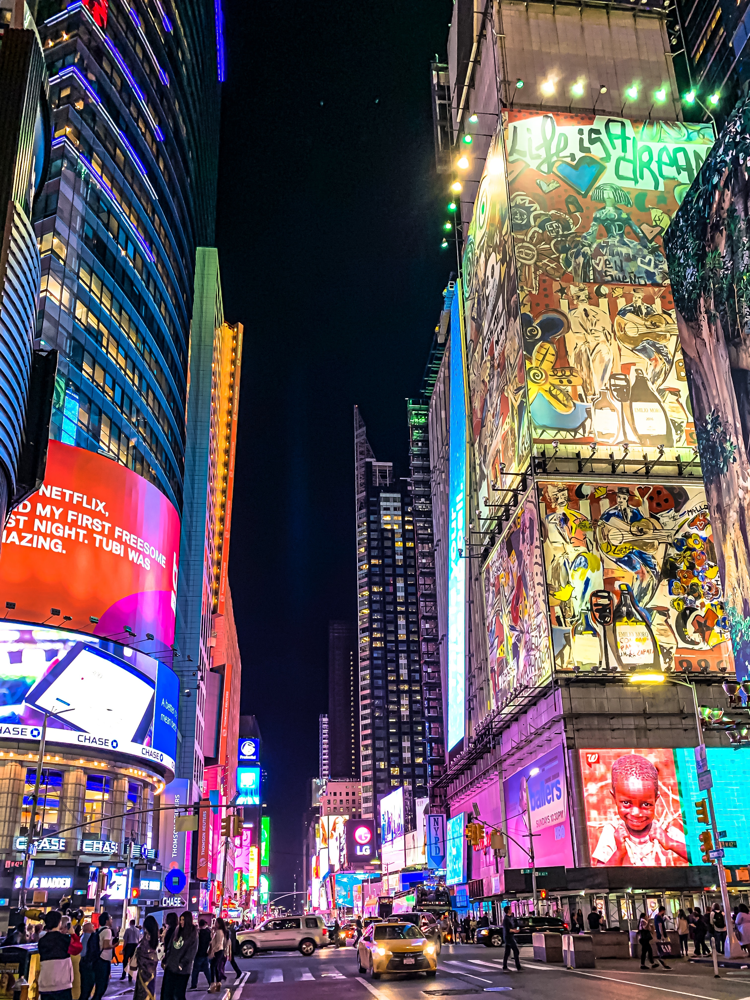

The Statue of Liberty is a famous symbol of freedom and democracy, located on Liberty Island in New York Harbor. It was a gift from the people of France to the United States, and was dedicated on October 28, 1886.
The Empire State Building is a world-famous Art Deco skyscraper located in Midtown Manhattan. It was completed in 1931 and stands at 1,454 feet tall. It was the tallest building in the world until 1970, and is still one of the tallest in the United States.
Central Park is an urban park located in the heart of Manhattan. It is the most visited urban park in the United States, with an estimated 42 million visitors per year. It covers 843 acres and is home to numerous attractions, including the Central Park Zoo, Bethesda Fountain, and Strawberry Fields.
| Tour | Cost of Admission |
|---|---|
| Statue of Liberty | $18.00 |
| Empire State Building | $32.00 |
| Time Square | Free |
| Central Park | Free |